算力生意（上）：
英伟达的产品版图
内容提要：个人用户需要游戏、创作和本地 AI；企业团队需要设计、研发和部署；云厂商与算力运营商需要组织大规模计算；设备厂商则把计算装进机器人和汽车。英伟达围绕这些需求提供不同产品：从 GPU 等计算部件，到整机与系统，再到开发、部署和仿真软件。客户要完成的工作，决定了这些产品如何组合。
一个玩家购买显卡，是为了让游戏运行得更流畅；一家设计公司配置工作站，是为了让设计师处理复杂项目；一家提供 AI 服务的公司建设计算集群，是为了让大量用户能够持续调用模型。
他们都可能使用英伟达产品，但需要解决的问题不同，买到或使用的东西也不同。
本文以这些用户的工作为线索，梳理英伟达的主要产品线：从个人显卡、专业电脑，到数据中心计算与网络，再到机器人、汽车，以及贯穿其中的软件和云平台。重点是看清它提供什么、各类产品有什么关系。实际项目可以根据需求与兼容性，组合不同厂商的硬件、软件和开源工具；文中的场景用于说明产品用途，并不意味着需要购买或使用英伟达的整套产品。
个人电脑、专业创作与服务器环境｜AI 概念插画
一、个人用户：游戏、创作与本地 AI
玩家和创作者，用到的是怎样一套电脑
对玩家来说，显卡影响游戏画面的计算与呈现；对视频和三维创作者来说，它可以加速部分制作、渲染和导出工作。GeForce 是英伟达面向个人电脑的主要 GPU 产品家族，RTX 50 系列从 RTX 5050 延伸到 RTX 5090，覆盖不同定位；笔记本还有相应产品，具体规格需与桌面版分别看。[01]
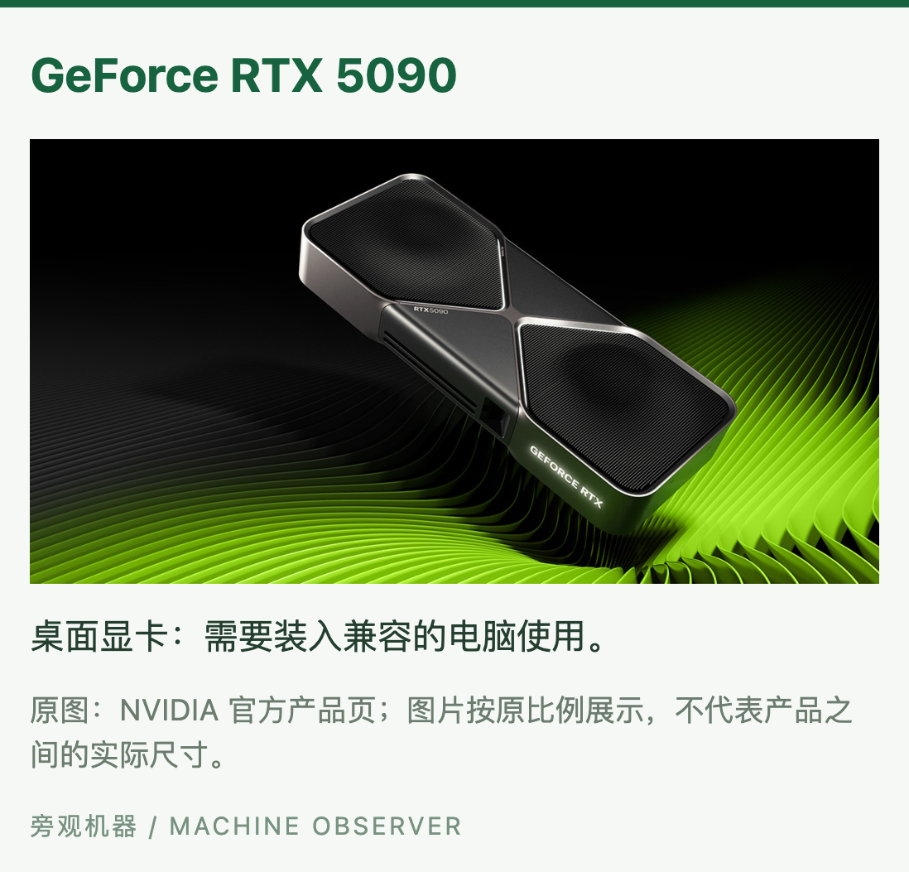
个人用户也可以选择搭载 GeForce RTX 笔记本 GPU 的整机，用于游戏、创作和本地 AI。[02]
这里先分清两个容易混用的词。GPU 是 Graphics Processing Unit，即图形处理器；显卡则是包含 GPU、显存、供电等组件的板卡。 GPU 负责计算，显卡将这些组件装在一起，供电脑使用。
GPU 擅长把适合拆分的运算分配给许多计算单元同时处理。画面渲染有大量这类工作，AI 中的许多计算也适合这种方式，所以同一类产品能同时服务游戏、创作和 AI。[03]
但显卡不会独自完成全部工作。CPU，即 Central Processing Unit，中央处理器，运行通用程序、组织执行流程；系统内存保存程序正在使用的数据；硬盘或固态硬盘长期保存程序和文件。剪辑视频时，素材需要被读取、处理和输出，GPU 加速的是其中适合它的环节。[04] [05]
软件中的任务由 CPU、GPU 等部件分工处理，并非所有操作都会因为显卡升级而变快。驱动帮助操作系统和应用使用显卡；NVIDIA Studio 是面向创作者的软硬件配套体系，包含创作工具、Studio 驱动和相关设备支持。剪辑师仍在使用 Premiere、达芬奇等软件，Studio 提供的是背后的配套，并不是另一款剪辑软件。[06]
个人使用 AI 的两种常见方式
个人使用 AI，既可以通过官方网站或应用访问在线服务，也可以将支持本地部署的模型下载到自己的电脑。两种方式的主要区别，在于模型由谁运行、计算资源由谁提供。
1. 使用在线 AI 服务
通过 ChatGPT、Kimi 等官方网站或应用，用户可以直接提问、提交资料并获取结果，无需自行安装和维护模型。模型的主要计算在服务商的云端完成，本机主要承担输入、文件传输和结果展示等工作。
视频生成也是如此。例如，通过在线服务使用 Seedance 时，生成任务由云端处理，速度主要取决于服务端的计算与调度。将生成的视频下载到本地后，剪辑、特效和渲染等环节才可能进一步使用本机 GPU。[07]
在线服务省去了模型安装和设备维护，适合日常问答、写作和资料整理。对于这类使用方式，本地显卡通常不是决定模型生成速度的主要因素。
2. 在本地部署模型
本地部署是将模型文件和运行软件下载到自己的设备，由本机完成模型计算。支持这种方式的常见模型包括：
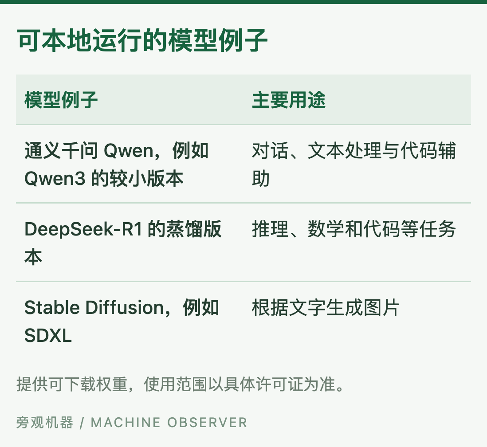
这些模型提供可下载的权重，即模型训练得到的参数，具体使用范围以许可证为准。其中，蒸馏版是学习较大模型能力的较小模型，便于在资源更有限的设备上运行，但不等同于完整在线服务。[08] [09] [10]
本地部署主要满足对数据位置、离线使用和模型控制的要求。例如，处理不便上传的资料时，可以让模型与相关工具全部在本地运行；开发者也可以固定模型版本、调整运行参数，或在许可范围内微调模型。离线运行需要提前准备好模型和必要软件，处理过程也不能依赖外部服务。
相应地，用户需要承担设备、配置和维护成本。本地模型的能力与速度受硬件条件限制，长期使用是否更经济，也要综合计算硬件、电费和维护投入。因此，是否部署应由具体需求决定；日常使用在线服务已经能够完成的任务，无须仅为使用 AI 而额外购置显卡。
本地模型对计算与内存的要求
模型在本机运行后，处理器性能、内存容量和数据传输能力便会直接影响运行效果。有些模型可以使用 CPU，GPU 则能加速适合并行处理的计算，前提是运行软件支持相应硬件。[08]
采用独立显卡时，显存用于保存 GPU 运算所需的模型和工作数据。显存容量决定可以容纳多少数据，显存带宽反映单位时间的数据传输能力。 系统内存与显存的访问路径不同，不能将两者简单相加，视为同一块高速空间。[11]
可用显存不足时，任务可能需要缩减规模，或借助其他内存与存储运行，从而增加传输和等待。显存足够以后，继续增加容量也未必提高速度，还要看计算能力、带宽和软件实现。这也是评估本地 AI 设备时，需要结合具体模型与任务，而不能仅参考游戏性能的原因。
这一类客户通常接触的是显卡或装有 GPU 的整台电脑，以及配套的应用、驱动和工具。GeForce 是产品家族；Blackwell 等名称描述技术架构。比如 RTX 5090 是采用 Blackwell 架构的具体产品，两者不是两个并列的显卡型号。[12]
二、企业专业团队：把设计和研发项目做出来
企业里的使用者可能是设计师、工程师、研究员或程序员。他们不一定使用同一种设备：专业设计关注项目与软件，模型研发还需要开发环境、实验和部署能力。
设计师与工程师：项目变大，设备要求随之变化
建筑师用 Revit 建立建筑模型，机械工程师用 SOLIDWORKS 设计零件和装配结构。随着项目规模扩大，他们需要根据工作要求配置电脑，兼顾处理能力、内存容量和软件运行的稳定性。[13] [14]
面向这类用途销售的专业电脑，也常被称为“工作站”，既有台式主机，也有笔记本。RTX PRO 则是可以装在这类电脑里的专业 GPU；需要经常携带设备的用户，也可以选择搭载 RTX PRO 笔记本 GPU 的电脑。[15] [16]
RTX PRO 的价值包括部分型号提供的大显存，以及专业软件认证、企业驱动与支持。认证意味着针对专业应用进行兼容性验证，帮助企业选择和维护设备。它解决的是项目环境中的具体要求，并不意味着每一家企业都必须使用专业卡。[17]
例如，桌面 RTX 5090 配备 32 GB 显存，RTX PRO 6000 Blackwell Workstation Edition 配备 96 GB。当项目需要同时容纳更多数据时，更大的空间可能改变任务能否在本机顺利完成。[12] [18]
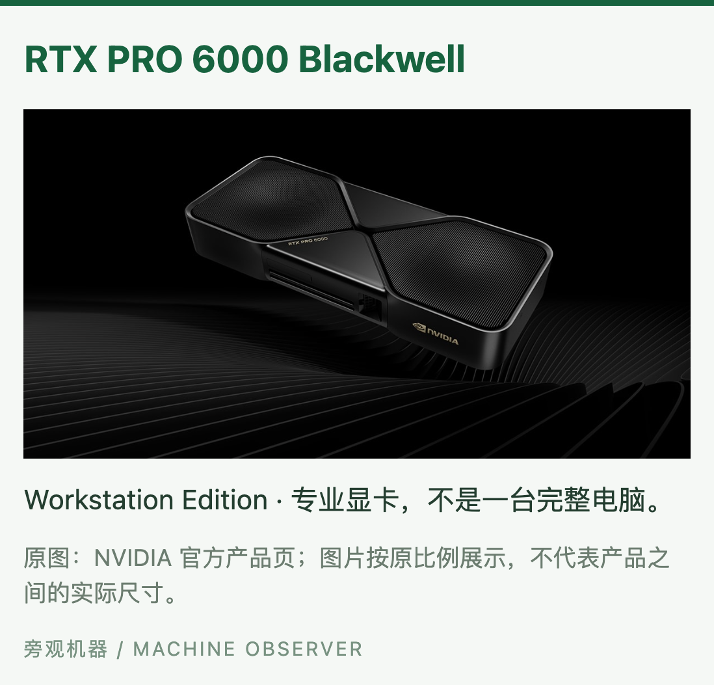
不过，专业卡的价格和显存容量，不能直接代表每款软件的速度。工作站厂商 Puget Systems 在 Topaz Video 1.6.1 测试中发现，RTX PRO 5000 Blackwell 的 48 GB 与 72 GB 版本表现接近，差异处于测试误差范围内。对那组任务而言，增加显存没有带来明显提速。[19]
因此，企业选型需要把项目要求与实际表现放在一起看：先确认能否容纳项目、能否满足软件和维护要求，再比较完成具体工作的效率。
研究员与程序员：开发一个 AI 客服助手，需要哪些产品
企业要使用 AI，首先需要决定是购买现成应用，还是自行开发。以客服为例，购买现成客服软件后，企业主要配置业务资料与服务流程；选择自行开发，则需要把客户提问、业务数据查询和模型回答连接起来。
自行开发客服应用时，模型的运行有三种选择：调用现成模型 API、租用云端算力自行部署，或使用自己的设备部署。
第一种，调用阿里云百炼的千问模型 API。 API 就是程序调用接口，企业通过它向阿里云已经运行好的模型发送内容、取得回答，无需自己部署这部分模型服务。[20]
假设客户问：“我的订单什么时候发货？”企业的客服系统先查询这笔订单，得到“已付款，预计明天发货”的记录，再把客户的问题和这条记录发给千问。千问据此生成“您的订单已付款，预计明天发货”的回复，由客服系统显示给客户。企业系统负责取得订单事实，千问负责根据这些信息生成回答。 接入模型 API 不会让千问自动知道企业的订单情况，程序员仍需要接通相应的数据查询流程。[21]
第二种，租用阿里云 GPU 云服务器，自行部署千问模型。 企业租到的是远程计算资源，研发人员需要下载适合的可部署模型版本、安装运行软件并启动模型服务。同样是回答发货问题，客服系统这次把订单信息交给企业自己部署的模型。阿里云负责底层硬件，企业负责所部署模型服务的更新与运行管理。[22]
这两种方式最终都可以通过 API 接入客服系统，区别在于模型服务由谁部署和维护。第三种，在企业自己的设备上部署模型，则还需要企业配置和维护相应硬件。这些方式也可以组合，例如在自己的电脑上开发测试，再部署到租用的云端服务器；具体服务形式与计费将在下篇展开。
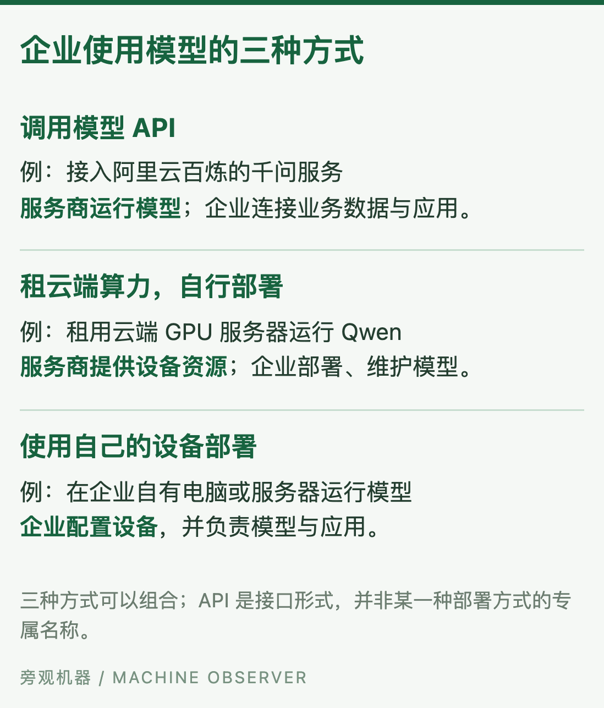
下面以选择在自己的设备上开发文字客服助手的团队为例，说明模型、软件和硬件如何配合。团队先选一个可以本地运行的语言模型，再测试回答质量、调整模型，并把它接入客服程序。英伟达除了提供硬件，也提供可供开发者选用的模型，例如 Nemotron 系列；模型的具体版本和使用条件需要与项目匹配。[23]
调整模型和使用模型，是这个项目中不同的计算任务。 如果团队用整理好的客服问答样本调整模型参数，让它更好地遵循企业的回复格式与处理要求，这属于训练；在已有模型基础上继续训练，称为微调。模型收到一个新问题并生成回答，则是在进行推理。研发人员在电脑上测试一句回复，已经发生了推理；上线后为客户生成回答，仍然是推理。团队还需要准备数据、评估效果和维护程序，训练与推理并不涵盖项目的全部工作。[24]
开发工具怎样配合模型工作
为了开发这个客服助手，研发人员需要能够调整和运行所选模型的软件。在英伟达 GPU 上开发和运行模型，常会通过 CUDA 及其相关工具调用计算能力。CUDA 是英伟达的并行计算平台与编程模型；CUDA Toolkit 是相应的开发工具包，包含编译、调试工具，以及可以直接调用的计算功能。开发者可以直接使用这些工具，也可以通过支持 CUDA 的模型开发框架间接使用 GPU。这套基础能力贯穿训练和推理，也可以用于个人电脑、企业服务器与云端。[25]
在这套基础之上，团队可以按项目需要选择更具体的工具。客服助手若需要微调，NeMo 这套模型开发工具可以帮助研发人员完成受支持模型的定制与评估。它与前面提到的 Nemotron 有区别：Nemotron 提供模型，NeMo 提供开发和改进模型的工具。[24]
当模型已经能够生成合适的回复，下一步是让它高效运行并接入客服程序。TensorRT 是优化模型推理的软件工具系列，其中 TensorRT-LLM 面向大语言模型，帮助优化生成回答时的计算执行。NIM 则提供预先打包好的模型推理服务：把受支持模型所需的运行组件组织好，并提供程序调用接口。程序员部署相应服务后，客服程序就可以向它发送问题、接收回答。[26] [27]
这些工具可以协作；部分 NIM 服务内部就会使用 TensorRT-LLM 等推理引擎。使用英伟达 GPU 的团队，也可以选择 vLLM 等开源工具运行模型，而不采用 NIM；vLLM 在 NVIDIA GPU 上运行时仍会使用 CUDA 等底层组件。因此，硬件、底层平台与上层工具需要分开理解。[28]企业如果需要生产环境中的软件支持、安全更新与维护，还可以考虑 NVIDIA AI Enterprise 企业软件平台。[29] [30]
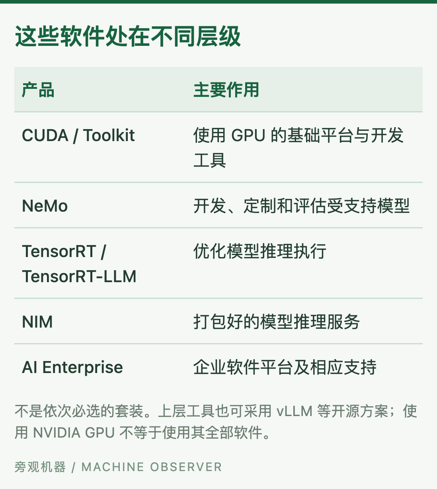
根据模型与软件要求配置设备
明确模型和软件方案后，团队需要检查现有电脑能否支持，再决定是否升级设备。软件与硬件也需要结合预算和实测结果反复调整。
能否运行、运行多快、回答质量如何，是不同的问题。 部分模型可以通过支持 CPU 的软件运行，例如 llama.cpp；如果软件支持现有设备且内存足够，计算能力较弱可能只是让回答生成得更慢。若运行环境不兼容，或可用内存不足以完成任务，则可能无法运行。模型和计算方式相同时，设备速度慢并不意味着回答质量必然下降；为了适应设备而改用更小的模型或降低计算精度，才可能改变结果质量。[31]
微调时，设备除了运行模型，还要保存调整参数所需的数据；推理时，设备需要装下模型并及时生成结果。模型大小、采用的训练方法、输入内容长度以及同时处理的请求数量，都会影响所需的内存和计算能力。因此，设备选型要先看具体工作量，不能仅凭“训练”或“推理”两个词决定买哪张卡。
对于能够在本机完成的实验，企业既可以购买已经配好 RTX PRO 显卡的电脑，也可以为兼容的台式电脑单独购买、安装显卡。DGX Spark 是英伟达推出的一款小型桌面 AI 电脑，已经内置 CPU 和 GPU，可用于本地模型开发、测试和运行，是团队的另一种设备选择。[32] [33]
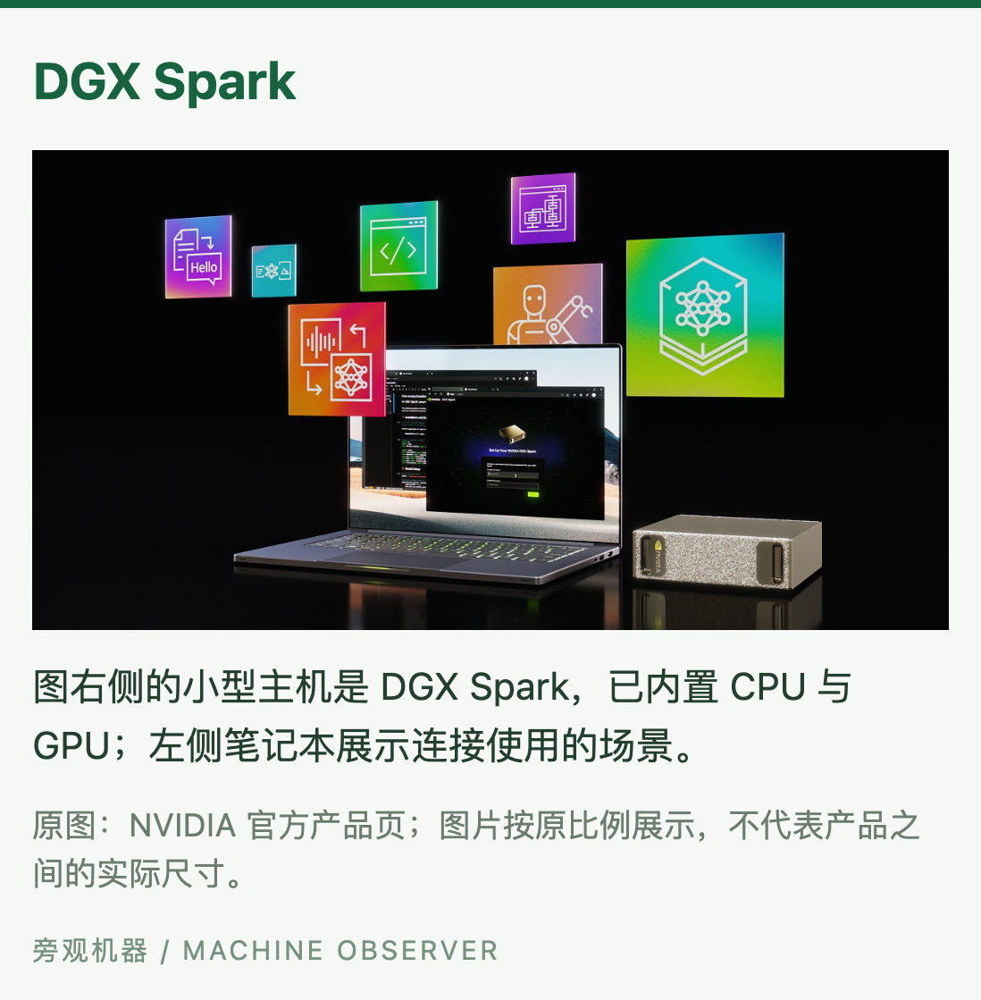
DGX Spark 采用 CPU 与 GPU 共享的统一内存。它能容纳多大的任务，与任务运行得多快，是不同问题。LMSYS 对早期 DGX Spark 的测试就提示，较大的内存空间不意味着所有模型都能高速运行；带宽和软件实现同样重要。[34]
不同 GPU 的设计各有侧重，用途也有交叉。 例如，数据中心的 A100 同时支持训练与推理，L40S 则兼顾 AI、图形与视频任务。更大规模的模型或更多并发请求，可能需要服务器乃至多台设备协作；这些配置将在下一节展开。[35] [36]
至此，团队使用的产品有了明确分工：模型提供生成回答的能力，电脑中的 GPU 执行计算，开发与部署软件让模型能够被调整、运行并接入应用。客服助手进入正式使用后，如果越来越多客户同时提问，就需要更多计算资源和持续运行的保障。这些工作可以由企业自己的团队承担，也可以通过租用算力或调用模型服务交给相应服务商。接下来从这些资源的提供者出发，看看云厂商与算力运营商如何组织设备、网络和软件。
三、云厂商与算力运营商：把计算设备变成可用的服务
前面那家企业将客服模型部署到云上以后，模型仍要在实际的服务器上运行。腾讯云、阿里云等云厂商提供这些计算资源；经营算力服务的企业也常被称为算力运营商，两者的业务可能重叠。服务器集中部署在数据中心等设施中，由相应团队管理。[37] [38]
对服务商而言，要解决的问题是：怎样让许多客户同时使用这些设备，完成模型训练、推理或其他计算工作？这需要从一台服务器开始，再考虑多台设备协作，最后把供电、散热和运行管理配齐。
一台服务器，怎样完成模型计算
服务器也是计算机，只是配置与设计围绕业务运行的需要展开。以运行客服模型的 GPU 服务器为例：存储设备保存模型文件，系统内存承接程序使用的数据，CPU 运行服务程序，GPU 执行适合它的模型计算。生成回答时，GPU 需要反复读取模型参数和中间数据，因此计算速度与内存的数据传输能力都很重要。
这也是数据中心 GPU 与个人显卡的一个重要区别。个人显卡通常还要兼顾游戏、显示和创作；面向大模型的数据中心 GPU 则更强调容纳模型、传输数据，以及与其他 GPU 协作的能力。英伟达的 A100、H100、H200，以及 Blackwell 系列的 B200、B300，都是这条产品线上不同代际的代表；新一代 Rubin 平台也延续了面向大规模 AI 计算的方向。它们并非按“训练卡”和“推理卡”严格分开，选型仍要看具体任务。[39] [35]
这些 GPU 都需要内存，但采用的内存技术不同。 例如，RTX 5090 使用 GDDR7 显存，H200 使用 HBM3e。HBM 是 High Bandwidth Memory，即高带宽内存，通过堆叠内存芯片等设计提高数据传输能力。当模型计算需要频繁读取大量数据时，更高带宽有助于减少等待。它是 GPU 内存的一种技术，不是需要额外添置的一台设备。[12] [40] [41]
服务商采购的也不只有 GPU。服务器里的 CPU 可以来自不同厂商，英伟达自己的 CPU 产品包括 Grace 和 Vera；它们负责的通用处理工作，与 GPU 的模型计算相互配合。[42]
多台设备，怎样一起承担更多工作
假设越来越多客户同时向模型提问，一台服务器已经忙不过来。服务商可以在更多设备上运行模型副本，把不同请求分配过去。另一种情况是模型本身很大，需要把模型或计算任务分配给多张 GPU；这时，一次任务的不同部分还需要在设备之间交换数据。
增加设备只是扩容的一部分，让设备及时交换数据同样重要。 如果 GPU 算完自己的部分，却一直等不到下一步需要的数据，再强的计算能力也会被等待拖慢。
英伟达为此提供了两类连接能力。NVLink 和 NVLink Switch用于支持高速 GPU 互连；当系统扩展到更多服务器时，ConnectX 网络适配器、Spectrum-X 以太网平台和 Quantum InfiniBand 网络产品参与服务器之间的通信。BlueField 则是 DPU，即数据处理单元，可以承担部分网络、存储和安全处理工作。[43] [44]
这里的“带宽”也有了不同对象：GPU 从自己的显存读取数据，看显存带宽；GPU 之间交换数据，看互连能力；跨服务器传输数据，还要看服务器网络。它们对应不同环节，不能用一个数字概括整套系统。
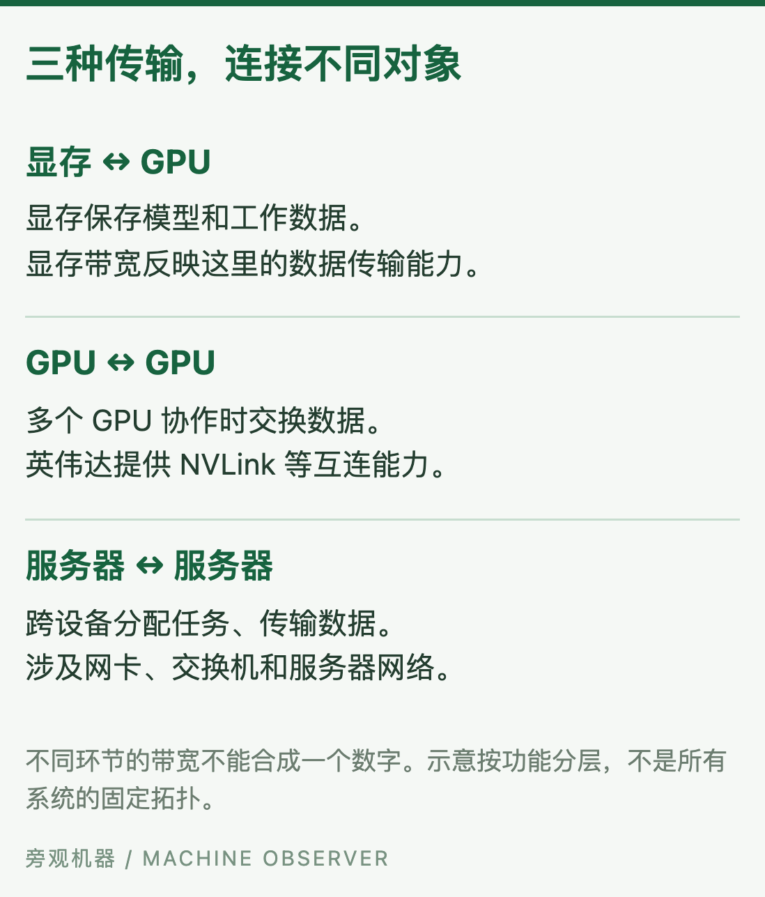
这些部件可以通过不同方式组成设备。HGX 是多 GPU 计算平台，服务器厂商围绕它补齐 CPU、内存、存储等配置；MGX 是模块化系统参考架构，帮助厂商设计和组合系统；DGX 则是英伟达的系统家族。因此，HGX、MGX 和 DGX 不是三种显卡型号。[42] [45] [46]
以 GB200 为例，它把 Grace CPU 与 Blackwell GPU 组合在一起；GB200 NVL72 则进一步把计算单元和高速互连组织成液冷机柜系统。更大规模的集群还会涉及 DGX SuperPOD 这类集成方案。随着设备规模扩大，英伟达提供的产品也从处理器延伸到了系统及其连接方式。[47] [48]
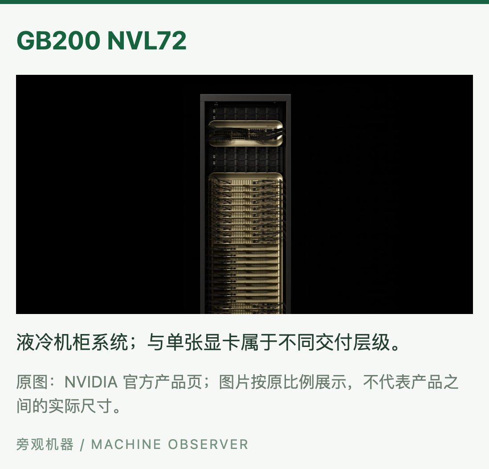
设备装好后，怎样持续向客户提供服务
机柜接通以后，服务商还要安排任务、监测设备、处理故障，并根据使用量调整资源。对于托管的模型服务，还需要管理模型运行与请求分配；对于出租的云服务器，客户通常自行管理其中的应用和模型。
例如，客服请求增多时，运行软件可以把请求分给更多模型副本。但同时处理的请求越多，并不代表每位客户都能更快收到回答。云服务商 CoreWeave 的文档要求用真实业务的输入长度、输出长度等条件测试，找到响应速度与总体处理量之间合适的设置。服务商要衡量的是在可接受的等待时间内能完成多少工作，而不只是装了多少张 GPU。[49]
英伟达自身也在运行这样的环境。其官方页面将 DGX Cloud 描述为内部用于开发和运行 AI 的云环境，跨云服务伙伴使用计算资源，并将实践转化为可供伙伴采用的软件与系统方案。这里的 DGX Cloud 指英伟达自身的研发与运行环境，展示的是硬件、模型软件和运营管理怎样配合。[50]
软件之外，机房必须提供匹配的供电、冷却和网络条件。服务器、网络与这些设施共同支撑集中计算；自建计算集群的企业和科研机构，也要面对同样的运行问题。[51]
这些条件也决定了一份报价包含多少工作。假设服务商要增加计算资源：给兼容的现有服务器加装 GPU，采购的是板卡；新增一台 GPU 服务器，报价就应列出实际配置的 GPU、CPU、系统内存、硬盘、网卡和电源等。若采购整套机柜系统，还要核对柜内互连、配电和冷却组件是否包含，以及机房需要做哪些配套改造。“支持安装几张 GPU”不等于报价已经包含几张，设备交付也不自动包含模型部署与后续维护。[52]
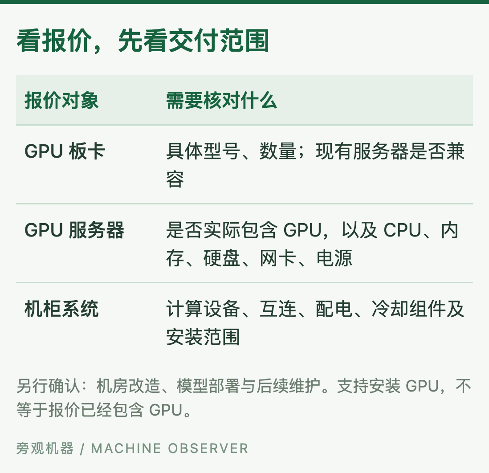
因此，服务商提供的算力，背后既有计算设备，也有网络、软件和持续运行的投入。企业租用资源，正是将其中一部分建设与维护工作交给服务商。接下来，计算还会走出机房，进入机器人和汽车等产品。
四、设备与汽车厂商：把计算能力装进产品
机房里的模型接收远程请求，机器人和汽车则需要不断处理身边发生的事情。摄像头拍到了什么、前方有没有障碍物、机械臂应当伸向哪里，都需要设备上的计算系统与传感器、控制程序配合完成。英伟达面向这类厂商提供的，既有装进设备的计算硬件，也有研发时使用的软件。
机器人与工业设备：把计算机做进产品里
假设一家企业开发分拣机器人：摄像头拍下传送带上的包裹，识别程序判断包裹的位置，再将结果交给机械臂的控制程序。机器人内部需要一套能够运行这些程序的计算硬件。
视觉识别、设备计算与仿真环境｜AI 概念插画，非实物接线图
Jetson 是英伟达面向机器人等设备的计算产品家族，包括小型计算模块、开发套件和配套软件。模块集成 CPU、GPU 和内存等核心部件，供厂商装进自己的产品；开发套件则把模块与连接外部设备的电路板等组合起来，方便工程师接上摄像头、运行程序、测试原型。Jetson Orin 和 Jetson Thor 是其中不同的产品系列。[53]
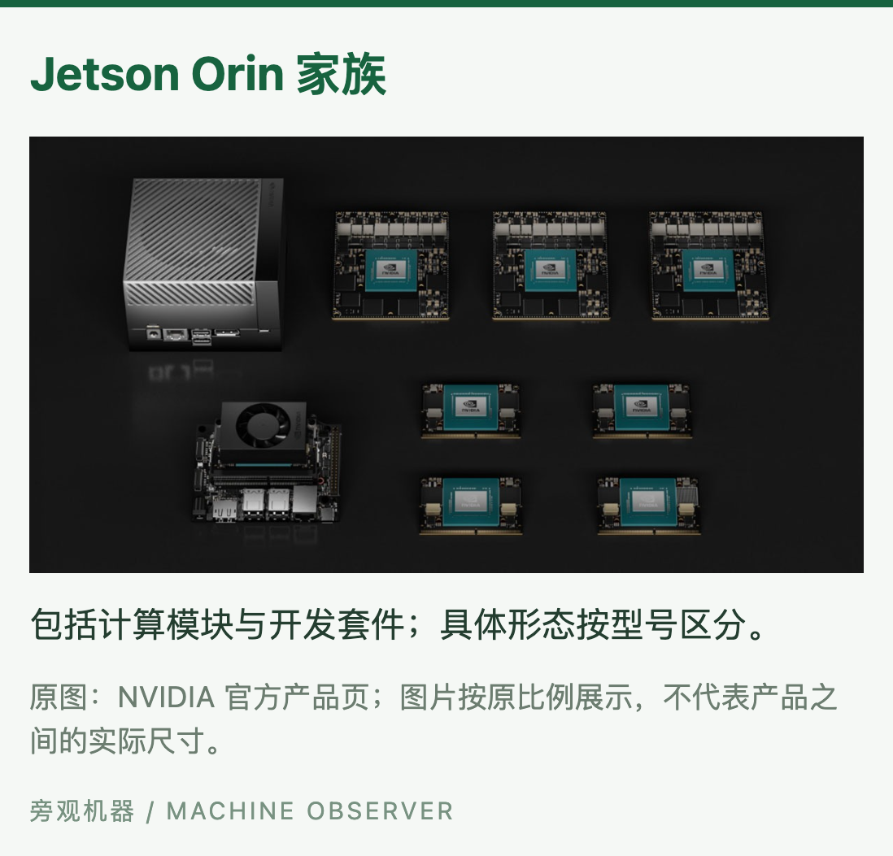
在这个例子中，厂商可以用 Jetson 运行包裹识别模型，再把识别结果交给机器人其他控制系统。摄像头、电机、机械结构和整机程序仍由厂商选配与集成。计算直接发生在设备附近，而不是把每项任务都送到远端机房，这种方式称为边缘计算。
工业现场还可能要求设备长时间稳定运行，并具备相应的安全处理与维护能力。IGX 是英伟达面向工业、医疗等场景的计算平台，将计算硬件、功能安全相关组件和企业软件支持组合起来。以配有安全微控制器的 IGX 产品为例，主处理器之外还有专门的硬件参与安全处理。是否需要这类平台，取决于设备的运行与安全要求；不能只按 AI 算力比较。[54]
研发机器人：用虚拟环境辅助训练和测试
分拣机器人投入使用前，还需要经过反复试验：包裹换一个位置、大小改变，机械臂是否仍能正确抓取？厂商可以先在电脑中建立虚拟机器人和场景，模拟运动、接触与碰撞，帮助发现问题。这就是这里所说的仿真。
Omniverse 是英伟达提供的一组用于构建三维与物理仿真应用的软件库、接口和服务。 开发者可以借助它们构建虚拟场景，让应用模拟物体的外观及部分物理行为。它提供的是开发这类应用的基础能力。[55]
在此基础上，Isaac 是面向机器人开发的软件与工具体系。其中，Isaac Sim 是基于 Omniverse 软件库构建的机器人仿真工具，可用于搭建虚拟场景、测试机器人并生成模拟训练数据。例如，团队可以改变虚拟包裹的位置和光照，检查识别程序与抓取动作在不同条件下的表现。[56] [57]
这提供了连接研发与设备的一种方式：团队可以在电脑或服务器上训练模型、运行仿真，并将适合的模型和程序部署到机器人里的 Jetson 等计算设备上。虚拟测试有助于扩大测试范围，但最终仍需要在真实机器人上验证。英伟达机器人业务负责人 Deepu Talla 在访谈中也强调了数据、训练、仿真和部署之间的联系。[58]
汽车厂商：车载计算、运行软件与整车方案
汽车也需要读取摄像头、雷达等传感器的数据，但车载计算还要与车辆系统及汽车安全要求配合。DRIVE 是英伟达面向辅助驾驶与自动驾驶开发的产品平台，其中几个名称对应不同部分。[59]
DRIVE AGX 是车载计算平台，提供运行感知等车载程序所需的计算硬件与开发环境。汽车厂商可以围绕它开发处理传感器数据、识别周围环境等功能。[60]
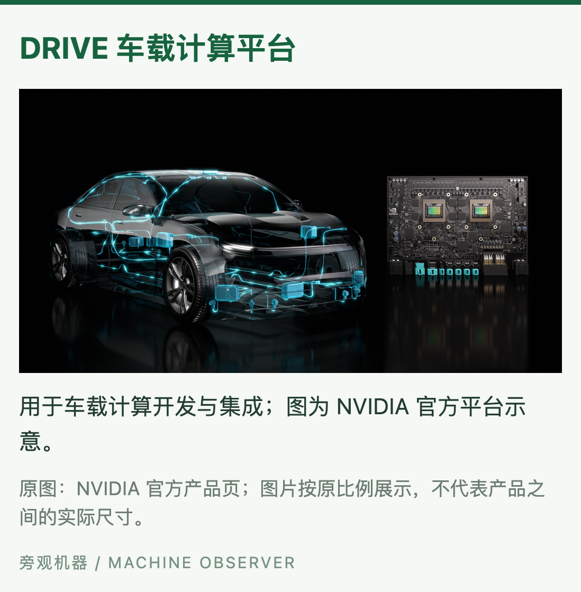
DriveOS 是配合 DRIVE 硬件使用的操作系统与基础软件栈，也就是让上层车载程序调用硬件、运行起来所需的一组基础软件。它与 DRIVE AGX 的关系，可以理解为车载计算硬件与其运行基础。[61]
DRIVE Hyperion 则把计算平台、传感器配置和驾驶软件等组合成参考平台，供汽车厂商开发、集成和验证。它比单独的计算硬件覆盖更广，但车辆最终具备哪些驾驶能力，仍取决于整车方案、软件、测试与验证。[62]
因此，设备厂商购买的可以是嵌入产品的计算模块，也可以是研发工具或更完整的参考平台。英伟达提供这些组成部分，厂商负责将它们与传感器、机械或车辆系统结合，做成最终产品。
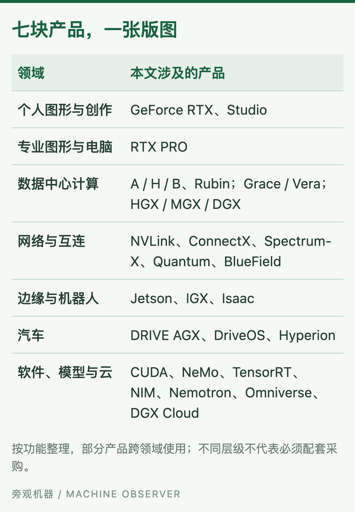
从个人电脑到企业研发，再到算力运营与设备制造，英伟达的产品随着客户的工作而组合。个人可能通过现成应用使用 GPU，开发者借助软件工具安排计算，运营团队管理整套系统，设备厂商则把计算集成进自己的产品。
读懂这张版图，要同时看清谁在使用，以及使用的是哪一层产品。 这也为理解下一步的算力交易建立了基础：阿里云、腾讯云怎样提供计算与模型服务，Token 如何计费，AI 工厂怎样组织设备与运行过程，将在下篇接着讨论。
附：基础概念速查
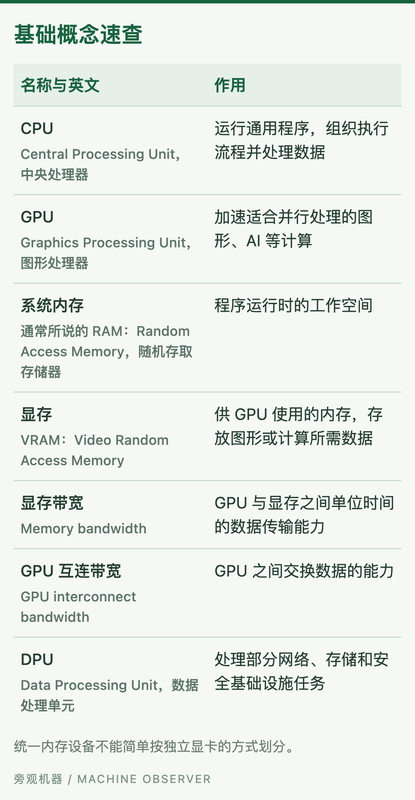
系统内存与 GPU 内存的划分依设备设计而异；采用统一内存的系统不能按独立显卡的方式简单相加。[03] [04] [11] [42] [43]
附：数据中心产品的补充方向
除 GPU 外，面向特定推理任务的专用处理器也在发展。英伟达已公布 Groq 3 LPX 的量产信息：LPU 是面向推理的处理器，LPX 是相应系统名称。这是专用计算的补充方向，具体表现需要按模型、任务和部署条件比较。[63]
附：两种官方价格口径样本
查询日期：2026年9月12日，美国官方商城。这里是网页挂牌价，不是出厂批发价；页面均显示缺货，税费、运费及实际成交价未确认。
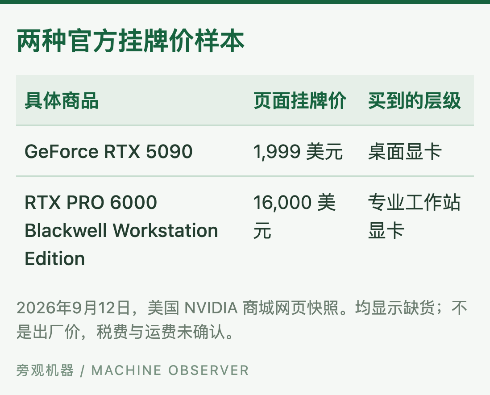
来源：[64] [65]。这两项只能展示具体商品的公开价格，不能据此推算服务器或机柜成本。数据中心设备应按完整配置取得报价；本次核查未获得这些系统可直接套用的官方公开出厂价。
附注：Studio 的官方资料介绍了创作应用、工具与设备支持，本次未查到可靠的最新活跃用户数，本文不据此判断实际使用人数。
来源与进一步阅读
[02] GeForce RTX 笔记本
[03] Intel：GPU 与 CPU
[04] Intel：RAM 与处理器
[05] Kingston：内存与存储
[06] NVIDIA Studio 创作者平台
[07] 火山引擎：Seedance API 服务
[08] Qwen 官方说明
[09] DeepSeek-R1 官方说明
[10] SDXL 官方模型页
[11] IBM：AI 基础设施术语
[12] RTX 5090 规格
[13] Revit 官方介绍
[14] SOLIDWORKS 官方介绍
[15] 专业电脑与普通电脑的区别
[16] 专业笔记本
[17] Professional Desktop GPUs
[18] RTX PRO 6000 工作站版规格
[19] Topaz Video 1.6.1 Professional GPU Performance Analysis
[20] 百炼官方介绍
[21] 模型与应用端工具的分工
[23] Nemotron 模型
[24] NeMo 开发文档
[25] CUDA Toolkit
[26] TensorRT
[27] NIM
[28] vLLM 的 GPU 支持
[29] NIM 文档
[30] NVIDIA AI Enterprise
[31] llama.cpp 支持的运行方式
[32] 联想整机配置示例
[33] DGX Spark
[34] NVIDIA DGX Spark with SGLang
[35] A100
[36] L40S
[37] 腾讯云 GPU 云服务器
[38] 阿里云 GPU 云服务器
[39] 数据中心产品
[40] H200
[41] HBM 技术
[42] 系统组件
[43] GPU 互连
[44] 网络产品
[45] MGX
[46] DGX
[47] GB200 NVL72
[48] DGX SuperPOD
[49] CoreWeave：推理服务扩容
[50] DGX Cloud
[51] 机房部署规划
[52] 服务器配置示例
[53] Jetson 产品介绍
[54] IGX 官方介绍
[55] Omniverse 官方介绍
[56] Isaac
[57] Isaac Sim
[58] Deepu Talla 访谈
[59] DRIVE 官方介绍
[60] DRIVE 车载计算
[61] DriveOS
[62] DRIVE Hyperion
[63] Groq 3 LPX 官方公告
[64] GeForce RTX 5090 marketplace
[65] RTX PRO 6000 Blackwell Workstation Edition marketplace
产品实物与平台图片来源：NVIDIA 官方产品页。场景插画由 AI 生成；图表依据正文整理。